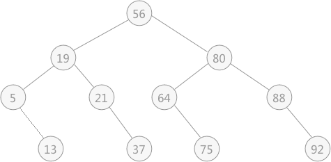
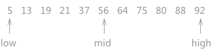
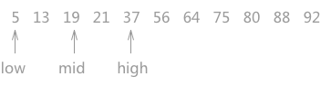
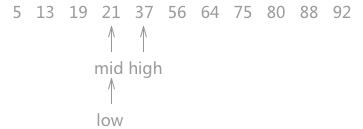
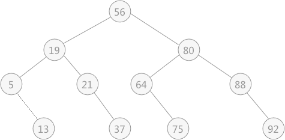

二分查找（折半查找）算法详解（C语言实现）
折半查找，也称二分查找，在某些情况下相比于顺序查找，使用折半查找算法的效率更高。但是该算法的使用的前提是静态查找表中的数据必须是有序的。
例如，在
如上图 1 所示，指针 low 和 high 分别指向查找表的第一个关键字和最后一个关键字，指针 mid 指向处于 low 和 high 指针中间位置的关键字。在查找的过程中每次都同 mid 指向的关键字进行比较，由于整个表中的数据是有序的，因此在比较之后就可以知道要查找的关键字的大致位置。
例如在查找关键字 21 时，首先同 56 作比较，由于
因此，再次遍历时需要更新 high 指针和 mid 指针的位置，令 high 指针移动到 mid 指针的左侧一个位置上，同时令 mid 重新指向 low 指针和 high 指针的中间位置。如图 2 所示：

图 4 折半查找对应的判定树
对于具有 n 个结点（查找表中含有 n 个关键字）的判定树，它的层次数至多为：
同时，在查找表中各个关键字被查找概率相同的情况下，折半查找的平均查找长度为：
例如，在
{5,21,13,19,37,75,56,64,88 ,80,92}这个查找表使用折半查找算法查找数据之前，需要首先对该表中的数据按照所查的关键字进行排序：{5,13,19,21,37,56,64,75,80,88,92}。在折半查找之前对查找表按照所查的关键字进行排序的意思是：若查找表中存储的数据元素含有多个关键字时，使用哪种关键字做折半查找，就需要提前以该关键字对所有数据进行排序。
折半查找算法
对静态查找表{5,13,19,21,37,56,64,75,80,88,92}采用折半查找算法查找关键字为 21 的过程为：

图 1 折半查找的过程（a）
图 1 折半查找的过程（a）
如上图 1 所示，指针 low 和 high 分别指向查找表的第一个关键字和最后一个关键字，指针 mid 指向处于 low 和 high 指针中间位置的关键字。在查找的过程中每次都同 mid 指向的关键字进行比较，由于整个表中的数据是有序的，因此在比较之后就可以知道要查找的关键字的大致位置。
例如在查找关键字 21 时，首先同 56 作比较，由于
21 < 56，而且这个查找表是按照升序进行排序的，所以可以判定如果静态查找表中有 21 这个关键字，就一定存在于 low 和 mid 指向的区域中间。因此，再次遍历时需要更新 high 指针和 mid 指针的位置，令 high 指针移动到 mid 指针的左侧一个位置上，同时令 mid 重新指向 low 指针和 high 指针的中间位置。如图 2 所示：

图 2 折半查找的过程（b）
同样，用 21 同 mid 指针指向的 19 作比较，图 2 折半查找的过程（b）
19 < 21，所以可以判定 21 如果存在，肯定处于 mid 和 high 指向的区域中。所以令 low 指向 mid 右侧一个位置上，同时更新 mid 的位置。

图 3 折半查找的过程（3）
当第三次做判断时，发现 mid 就是关键字 21 ，查找结束。图 3 折半查找的过程（3）
折半查找的实现代码：注意：在做查找的过程中，如果 low 指针和 high 指针的中间位置在计算时位于两个关键字中间，即求得 mid 的位置不是整数，需要统一做取整操作。
#include <stdio.h>
#include <stdlib.h>
#define keyType int
typedef struct {
keyType key;//查找表中每个数据元素的值
//如果需要，还可以添加其他属性
}ElemType;
typedef struct{
ElemType *elem;//存放查找表中数据元素的数组
int length;//记录查找表中数据的总数量
}SSTable;
//创建查找表
void Create(SSTable **st,int length){
(*st)=(SSTable*)malloc(sizeof(SSTable));
(*st)->length=length;
(*st)->elem = (ElemType*)malloc((length+1)*sizeof(ElemType));
printf("输入表中的数据元素：\n");
//根据查找表中数据元素的总长度，在存储时，从数组下标为 1 的空间开始存储数据
for (int i=1; i<=length; i++) {
scanf("%d",&((*st)->elem[i].key));
}
}
//折半查找算法
int Search_Bin(SSTable *ST,keyType key){
int low=1;//初始状态 low 指针指向第一个关键字
int high=ST->length;//high 指向最后一个关键字
int mid;
while (low<=high) {
mid=(low+high)/2;//int 本身为整形，所以，mid 每次为取整的整数
if (ST->elem[mid].key==key)//如果 mid 指向的同要查找的相等，返回 mid 所指向的位置
{
return mid;
}else if(ST->elem[mid].key>key)//如果mid指向的关键字较大，则更新 high 指针的位置
{
high=mid-1;
}
//反之，则更新 low 指针的位置
else{
low=mid+1;
}
}
return 0;
}
int main(int argc, const char * argv[]) {
SSTable *st;
Create(&st, 11);
getchar();
printf("请输入查找数据的关键字：\n");
int key;
scanf("%d",&key);
int location=Search_Bin(st, key);
//如果返回值为 0，则证明查找表中未查到 key 值，
if (location==0) {
printf("查找表中无该元素");
}else{
printf("数据在查找表中的位置为：%d",location);
}
return 0;
}
以图 1 的查找表为例，运行结果为：
输入表中的数据元素：
5 13 19 21 37 56 64 75 80 88 92
请输入查找数据的关键字：
21
数据在查找表中的位置为：4
5 13 19 21 37 56 64 75 80 88 92
请输入查找数据的关键字：
21
数据在查找表中的位置为：4
折半查找的性能分析
折半查找的运行过程可以用二叉树来描述，这棵树通常称为“判定树”。例如图 1 中的静态查找表中做折半查找的过程，对应的判定树如图 4：
图 4 折半查找对应的判定树
注意，此图中叶子节点看似为父节点的右孩子节点，其实不然，这里的叶子节点既可以作为右孩子节点，也可以当作左孩子节点对待，都是可以的。
在判定树中可以看到，如果想在查找表中查找 21 的位置，只需要进行 3 次比较，依次和 56、19、21 进行比较，而比较的次数恰好是该关键字所在判定树中的层次（关键字 21 在判定树中的第 3 层）。对于具有 n 个结点（查找表中含有 n 个关键字）的判定树，它的层次数至多为：
log2n + 1（如果结果不是整数，则做取整操作，例如： log211 +1 = 3 + 1 = 4 ）。同时，在查找表中各个关键字被查找概率相同的情况下，折半查找的平均查找长度为：
ASL = log2(n+1) – 1。
总结
通过比较折半查找的平均查找长度，同前面介绍的顺序查找相对比，明显折半查找的效率要高。但是折半查找算法只适用于有序表，同时仅限于查找表用顺序存储结构表示。
当查找表使用链式存储结构表示时，折半查找算法无法有效地进行比较操作（排序和查找操作的实现都异常繁琐）。
关注公众号「站长严长生」，在手机上阅读所有教程，随时随地都能学习。内含一款搜索神器，免费下载全网书籍和视频。

微信扫码关注公众号